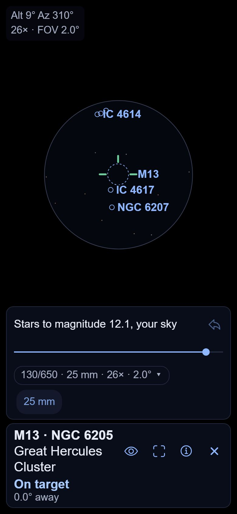
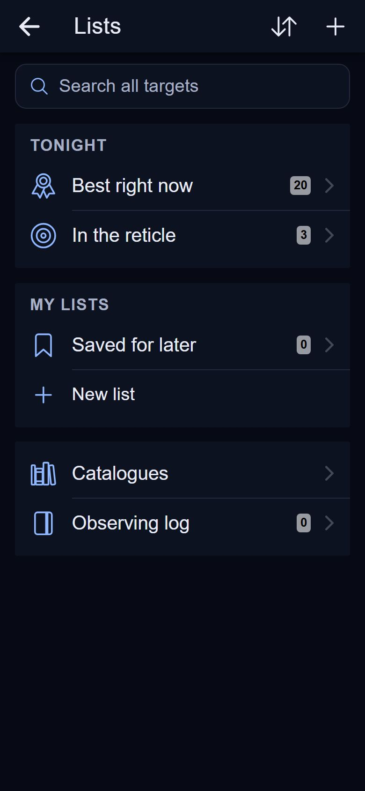
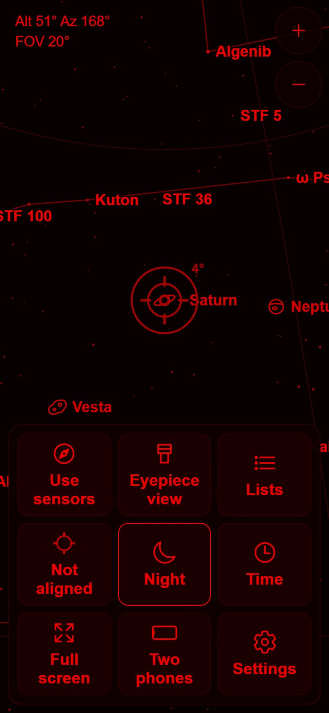

What it does
-
Follows your every move
Move the telescope and the phone's sensors move the map with it. Every plate solve from the camera fine-tunes the position.
-
Knows where you're pointing
The camera looks up, spots the stars and works out where your telescope points. Sensor fusion and plate solving, running right in your browser, even with no signal.
-
Takes you there
Pick a target, follow the arrows, and there it is in the rings. Then in your eyepiece.
-
Never runs out of targets
Messier, Caldwell, NGC and IC objects, planets, double stars, and what's best right now. Plus your own lists and an observing log.
-
Old phone in a drawer?
Give it a new job: put it on the telescope as the finder, and use your own phone as the remote. Optional: one phone is all you need.
-
Made for city skies
Built under a bright city sky, with big text you can read at arm's length, even without your glasses.
How it works
- Fix your phone to the telescope, with its camera looking at the sky.
- Align once: centre a bright star in the eyepiece and tap.
- Pick a target, follow the arrows, and enjoy the view.
Best on Android with Chrome. It works on iPhone with Safari too, with a few limits. Install it from the app to use it full screen.
Never point your telescope or your phone's camera at the Sun. Seriously.
Questions you may have
Is the name a joke?
Yes. The app isn't.
Do I need internet at the telescope?
No. Open it once at home, and it works offline in the field.
Will it work with my telescope?
If you can fix a phone to it, yes. The phone's camera does the work, not the telescope's.
How much does it cost?
Nothing. No ads, and no account needed.
About this project
AstroTurboMaxiSolver started as a personal project, a tool just for me. I built it quickly in my free time with vibe coding, by describing to an AI what to build, and it's the first project I've made this way, so expect some things to fail. I find it useful at the telescope, so I wanted to share it with other amateur astronomers.
I'm working towards releasing it as open source soon.
It's provided as is, without any warranty. It's experimental, not production software, and it may never be.
Clear skies! Open the app